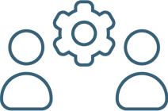
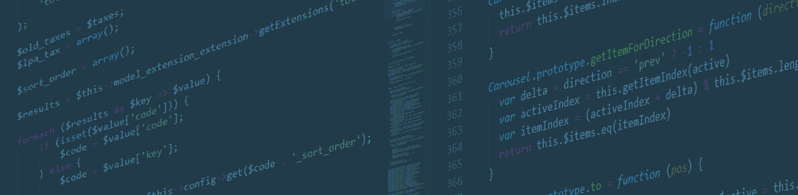
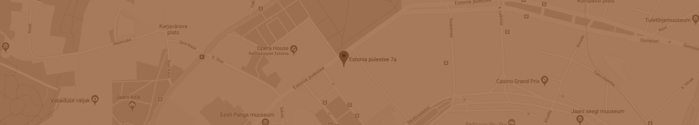

SITPA delivers state-of-the-art software solutions to clients worldwide
SITPA delivers state-of-the-art software solutions to clients worldwide
SITPA delivers state-of-the-art software solutions to clients worldwide
about sitpa
SITPA Solutions Ukraine has been established to actively support the ongoing public reform activities in Ukraine. Government efforts to improve public administration require new, innovative IT tools. This is the main market that SITPA Solutions Ukraine targets. With the availability of highly-skilled and creative IT specialists in Ukraine, SITPA Solutions Ukraine is best positioned to support the development of such sophisticated and tailor-made IT systems.
Our team of experts in Computer Science have been providing IT services and delivering various IT products for more than 20 years, primarily to private sector SMEs. However, in the last few years our focus has been turned towards the development of IT products for the public administration.
Through the Specialised IT solutions for a better Public Administration conceptualised and developed by SITPA Solutions Ukraine, our company will decisively contribute to the governmental reform efforts and to improve the delivery of public services.
Areas of expertise
web & mobile app development
SITPA Solutions Ukraine has an extensive experience building websites and mobile applications. Over the years our company has produced hundreds of websites and mobile apps of varying complexity aimed at solving different problems and reaching diverse objectives. SITPA provides turnkey solutions and builds web sites and applications from ground-up. Every project runs through several stages: initial discussions are held and feedbacks collected, concepts built and approved, technical specifications created and accepted, software development and graphic design stage is undertaken, quality assurance and due diligence stage is run, final product is delivered, post-delivery maintenance is provided.
software engineering
IT Experts of SITPA Solutions Ukraine have been delivering diverse software solutions to private and public sector clients for more than 20 years. Our IT specialists master a wide variety of contemporary programming languages and frameworks. We choose stack of technologies ad hoc for every project to assure all deliverables are provided and client‘s goals achieved.

technical assistance
SITPA Solutions Ukraine has been providing technical assistance to our clients in order to assure they can utilize all functionality features and capabilities of software to full extend and achieve desired goals. Technical assistance included but was not limited to written manuals, video tutorials, consulting and support provided by means of remote communication (Skype, Viber, TeamViewer and E-Mail) as well as on-site consulting and training whenever needed.
consulting & innovations
SITPA Solutions Ukraine struggles to keep up with the progress of digital technologies ever evolving. Therefore, our experts always try to use the most advanced, cutting-edge software solutions, technologies and approaches to guarantee our software matches and complies with world‘s best practices and standards. We are always happy to consult our clients with regard to which technology should be used for every particular task, based on our experience and in-depth knowledge of IT solutions. Besides, our IT experts work hard to introduce new innovative ideas and solutions of their own to further enhance the quality of our software products.

